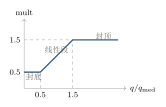

第十三章每个因子该占多少分？—— 权重从哪里来
13.1我盯着那个 0.20，越看越不顺眼
动量最近很准。 这句话是我在某次因子复盘之后对自己说的。复盘页上，动量那一行的表现明显好于其他几行，其他几个因子看起来平平无奇。 于是我打开了权重配置。均衡模板里，动量的权重是 \(0.20\)。我把光标停在那上面，越看越不顺眼：既然它是最近最准的那个，凭什么只给它 20%？ 我把小数点后的第一个数字改成了 \(5\)。\(0.20\) 变成 \(0.50\)。 那几天我心里挺舒服的，觉得自己终于“让数据说了话”。 三天后我开始怀疑自己。不是因为亏了钱——恰恰相反，那几天我手上几只票走得不错。我怀疑，是因为我说不出“为什么是 0.50，而不是 0.35 或者 0.65”。我改动的依据只有一句“它最近很准”，而从“很准”到“0.50”之间，没有任何一步是可复算的。 后来我在系统的修复清单里看到一条更早的记录，几乎是我这次犯的错的另一个版本：症状：因子质量分被极值带偏。那一刻我才明白，权重的来源问题有两个层次：第一层是“要不要让权重自己动”；第二层是“动的时候，你拿什么当基准”。我卡在了第二层。
根因：自适应加权用均值做参考基准。
修复：改用中位数medianFactorQuality。
一支球队的主教练，不会因为某个球员上一场砍了 30 分，就让他在下一场打满 48 分钟。
上场时间是分配出来的资源，它有三条纪律：
第一，状态好可以多打，但有上限。再厉害的球员也有体力极限，打满全场会拖垮防守。
第二，看的是全队的整体水平，不是平均值。如果一个替补突然砍了 60 分，把全队的场均分拉高了一大截，主教练不会因此把其他所有人的上场时间一起砍半——他知道那是一个异常值，不是全队变强了。
第三，每一次调整都要能复盘。“这场为什么让他多打 6 分钟”必须能回答。回答不出来的调整，下次就不知道是该继续还是该撤回。
因子权重和上场时间是同一种东西：都是有限话语权的分配。所以它遵守同样的三条纪律。
13.2不调整，或者放开调
先说不调整会怎样。 权重是一张写死的表，那表里每一个数都是一次“事前判断”。可市场是事后的：某个因子会有一段时间特别有效，另一段时间完全失灵。如果权重永远不动，一个已经连续几个月失灵的因子，仍然拿着它那份话语权（均衡模板下可能是 \(0.20\)），在每一张榜上投出等量的噪声票。第 12 章那句话在这里要改写一下：不是“多一个歪因子污染整张榜”，而是“一个已经歪掉的因子，每天都在污染整张榜”。 那放开调呢？把权重完全交给“最近谁准”来决定，会得到另一个更糟的结果。 一个因子可能因为某段时间的运气，短期内指标非常漂亮。如果权重随它涨到 \(0.50\)、\(0.70\)，那整张榜其实已经变成单因子榜了。第 12 章我吃过这个亏——五只票其实是同一个注。权重失控的后果，就是一个人用一套看起来很高级的多因子系统，重新做了一遍单因子赌注。 所以两头都不能去：权重必须会动，但动幅必须有笼子。本章要回答的两个问题
- 一个因子凭什么多拿话语权？——靠它的质量分，不是靠感觉。
- 最多能多拿多少？——用乘数
mult封在 \(0.5\) 到 \(1.5\) 之间（命题 命题 13.2）。
13.3一条“差不多对”的规则，和它的两个漏口
“差不多对”的版本只有一句话：近期质量好的因子多给点权重，质量差的少给点。 这句话的问题在于“多给点”是多少。如果不定量，它就退化成我前面那个 \(0.20\to0.50\) 的手改动作。定量以后，系统的规则是\[\mathrm{mult}_k \;=\; \clamp\!\left(\frac{q_k}{q_{\mathrm{med}}},\ 0.5,\ 1.5\right),
\qquad
w'_k \;=\; w_k\cdot \mathrm{mult}_k , \tag{13.1}\]
其中 \(w_k\) 是该因子的基础权重，\(q_k\) 是它最近一次因子复盘落库的质量分，\(q_{\mathrm{med}}\) 是所有有效质量分的中位数。
这个符号在讲什么：\(q_k/q_{\mathrm{med}}\) 回答“这个因子比一屋子因子的中等水平好多少”；外面套的 \(\clamp\) 把答案夹在 \(0.5\) 到 \(1.5\) 之间——好得再多，也只乘 \(1.5\)；差得再多，也只乘 \(0.5\)。
这套规则有两个漏口，我在真机上各踩过一次。
漏口一：基准用均值。\(q_{\mathrm{med}}\) 这个名字里的 med 是后来改上去的，最早写的是均值。用一个爆表的因子把均值抬高，其余所有因子就会被一起压到 \(0.5\) 的下限——整个自适应机制退化成了“全体降权”，等于什么都没调。这正是本章开头那条修复记录说的事。
漏口二：只缩放，不再归一。乘数乘完以后，权重之和一般不再是原来的值。比如三个权重各 \(0.20\) 的因子，乘数分别是 \(1.5,1.5,1.0\)，调整后是 \(0.30,0.30,0.20\)，和为 \(0.80\)。如果就这么拿去打分，总分这一天最高只能到 \(80\)，第二天又可能到 \(110\)——跨天的总分不再可比，第 12 章定理 定理 12.3 的前提也跟着塌了。所以必须再做一次整体缩放，让权重之和回到原来的基准（下一节的 scale）。
13.4把它写严谨：一个假设、两条命题
假设 13.1（乘数的取值区间）
设共有 \(K\) 个参与调整的因子。对每个 \(k\)，基础权重 \(w_k>0\)，质量分 \(q_k>0\)；基准 \(q_{\mathrm{med}}>0\) 取 \(\{q_1,\dots,q_K\}\) 的中位数；乘数按式 式 (13.1) 定义为
\(\mathrm{mult}_k=\clamp(q_k/q_{\mathrm{med}},0.5,1.5)\)，其中 \(\clamp(u,\alpha,\beta)=\min(\max(u,\alpha),\beta)\)。
调整后权重 \(w'_k=w_k\mathrm{mult}_k\)，归一化权重 \(W_k=w'_k/\sum_{j}w'_j\)。
命题 13.2（乘数的有界性与单调性）
在假设 假设 13.1 下：
- \(\mathrm{mult}_k\in[0.5,\,1.5]\) 对一切 \(k\) 成立；
- 作为质量分 \(q\) 的函数 \(\mathrm{mult}(q)=\clamp(q/q_{\mathrm{med}},0.5,1.5)\) 在 \(q>0\) 上单调不减；
- 若 \(q_{\mathrm{med}}\to 0^{+}\)，则对任意固定的 \(q>0\) 有 \(\mathrm{mult}(q)\to 1.5\)；当 \(q_{\mathrm{med}}=0\) 时该定义不再成立。
证明■
（i）\(\clamp(u,0.5,1.5)\) 的定义就是 \(\min(\max(u,0.5),1.5)\)。无论 \(u\) 取什么实数，\(\max(u,0.5)\ge 0.5\)，所以 \(\clamp(u,0.5,1.5)\ge\min(0.5,1.5)=0.5\)；同时 \(\min(\cdot,1.5)\le 1.5\)。两端合起来，\(\clamp(u,0.5,1.5)\in[0.5,1.5]\) 对一切实数 \(u\) 成立。取 \(u=q_k/q_{\mathrm{med}}\)（由假设 \(q_k>0,q_{\mathrm{med}}>0\) 知它是正实数，定义无碍），即得 (i)。
（ii）把它拆成两段映射的复合：
\[q\ \longmapsto\ u(q)=\frac{q}{q_{\mathrm{med}}}\ \longmapsto\ \clamp(u,0.5,1.5).\]
第一段是斜率 \(1/q_{\mathrm{med}}>0\) 的直线，严格递增；第二段 \(\clamp\) 非降（它依次由“平移/取最大/取最小”这三个非降操作构成，与第 12 章命题 命题 12.1 里对 \(\clamp(50+10z,0,100)\) 的论证完全同型）。两个非降映射的复合仍非降，故 \(\mathrm{mult}\) 在 \(q>0\) 上单调不减。
顺带把 \(\mathrm{mult}\) 的三段形状写出来，因为它就是“封底 / 线性 / 封顶”的来源：
\[\mathrm{mult}(q)=
\begin{cases}
0.5, & 0<q\le 0.5\,q_{\mathrm{med}},\\[2pt]
\dfrac{q}{q_{\mathrm{med}}}, & 0.5\,q_{\mathrm{med}}\le q\le 1.5\,q_{\mathrm{med}},\\[4pt]
1.5, & q\ge 1.5\,q_{\mathrm{med}}.
\end{cases} \tag{13.2}\]
中间那一段才是“按质量线性说话”的区间：质量分正好等于中位数时乘数恰好为 \(1\)（保持原权重）；高多少就乘多少，低多少就乘多少。超出 \(1.5\) 倍的部分和低于 \(0.5\) 倍的部分被压平——这是刻意的，理由和上一章一样：不要把一次极端读数当成长期结论。
（iii）固定 \(q>0\)，令 \(q_{\mathrm{med}}\to 0^{+}\)，则 \(u(q)=q/q_{\mathrm{med}}\to+\infty\)；由式 式 (13.2) 第三段，\(\mathrm{mult}(q)\to 1.5\)。注意这个极限与 \(q\) 无关：每一个因子的乘数都趋于 \(1.5\)。而所有因子乘上同一个正数 \(1.5\)，在归一化之后会完全约掉：
\[W_k=\frac{w_k\cdot 1.5}{\sum_j w_j\cdot 1.5}=\frac{w_k}{\sum_j w_j},\]
也就是回到了基础权重本身。所以 \(q_{\mathrm{med}}\to0\) 不是“调整变弱”，而是整套自适应机制彻底失效——花了一套机制的成本，换回一张静止的权重表。
当 \(q_{\mathrm{med}}=0\) 时，\(q_k/q_{\mathrm{med}}\) 在实数意义下未定义（浮点运算里得到 \(+\infty\)，而若同时 \(q_k=0\) 则得到 \(0/0\) 的 NaN，任何比较都返回假，\(\clamp\) 会把 NaN 原样放出去，污染整张权重表）。因此定义域上必须排除 \(q_{\mathrm{med}}=0\)。
工程上的做法是两条：基准只在一个“有有效质量分”的因子集合上求中位数，且要求这个集合非空——medianFactorQuality 在集合为空时返回 \(0\)，调用方随即用 meanQ > 0 做门禁，条件不满足就整支退回基础权重。至于“至少 1 个有效样本”：若集合里只有 \(1\) 个因子，中位数就是它自己，\(q_k/q_{\mathrm{med}}\equiv 1\)，所有乘数都是 \(1\)，调整不发生，但也不会出错。这是完备性要求，不是效果要求。

定理 13.3（归一化后权重和恒为 1，且相对话语权被夹在 3 倍以内）
在假设 假设 13.1 下，归一化权重 \(W_k=w'_k/\sum_{j}w'_j\) 满足：
- \(\sum_k W_k=1\)，且每个 \(W_k>0\)；
- 对任意两个因子 \(k,l\) 有 \(\dfrac{1}{3}\cdot\dfrac{w_k}{w_l}\ \le\ \dfrac{W_k}{W_l}\ \le\ 3\cdot\dfrac{w_k}{w_l}\)；
- 对每个 \(k\) 有 \(\dfrac{1}{3}\cdot\dfrac{w_k}{\sum_j w_j}\ \le\ W_k\ \le\ 3\cdot\dfrac{w_k}{\sum_j w_j}\)。
证明■
先检查分母。由假设 \(w_j>0\) 且 \(\mathrm{mult}_j\ge 0.5>0\)（命题 命题 13.2(i)），每个 \(w'_j=w_j\mathrm{mult}_j>0\)；有限个正数之和为正，故 \(\sum_j w'_j>0\)，\(W_k\) 的定义合理。
（i）求和号里的 \(k\) 与分母里的 \(j\) 只是哑标，指的是同一个和：
\[\sum_k W_k=\sum_k\frac{w'_k}{\sum_j w'_j}=\frac{\sum_k w'_k}{\sum_j w'_j}=1 .\]
每个 \(W_k>0\) 则直接来自“分子为正、分母为正”。
（ii）把比值写成两部分：
\[\frac{W_k}{W_l}=\frac{w'_k}{w'_l}=\frac{w_k\,\mathrm{mult}_k}{w_l\,\mathrm{mult}_l}
=\frac{w_k}{w_l}\cdot\frac{\mathrm{mult}_k}{\mathrm{mult}_l}.\]
由 \(\mathrm{mult}_k,\mathrm{mult}_l\in[0.5,1.5]\)，中间那个比值被夹住：
\[\frac{\mathrm{mult}_k}{\mathrm{mult}_l}\ \ge\ \frac{0.5}{1.5}=\frac{1}{3},
\qquad
\frac{\mathrm{mult}_k}{\mathrm{mult}_l}\ \le\ \frac{1.5}{0.5}=3 .\]
（分子最小、分母最大给出下界；分子最大、分母最小给出上界。）两边同乘正数 \(w_k/w_l\)，即得 (ii)。
（iii）分母满足 \(\sum_j w_j\,\mathrm{mult}_j\le 1.5\sum_j w_j\)（每个 \(\mathrm{mult}_j\le1.5\)），于是
\[W_k=\frac{w_k\,\mathrm{mult}_k}{\sum_j w_j\,\mathrm{mult}_j}
\ \ge\ \frac{0.5\,w_k}{1.5\sum_j w_j}=\frac{1}{3}\cdot\frac{w_k}{\sum_j w_j}.\]
同理 \(\sum_j w_j\,\mathrm{mult}_j\ge 0.5\sum_j w_j\)，且 \(\mathrm{mult}_k\le1.5\)，于是
\[W_k\ \le\ \frac{1.5\,w_k}{0.5\sum_j w_j}=3\cdot\frac{w_k}{\sum_j w_j}.\]
(iii) 得证。
注 13.4
系统实际的整体缩放不是把权重和缩到 \(1\)，而是缩到基础权重和 baseSum：scale = baseSum/adjSum。这是一个正的公共倍数，同时出现在每个 \(W_k\) 的分子和分母里，因此定理 定理 13.3 的 (ii)、(iii) 一字不改，(i) 变成 \(\sum_k W_k=\code{baseSum}\)。之所以不缩到 \(1\)，是为了让“今天的总分”和“昨天的总分”还有可比性。
注 13.5（诚实下线会把下界再压低）
系统还有一条额外规则：若某因子的分半检验真实可判定且判定为不稳定，它的乘数会先封顶到 \(0.6\) 再砍半，即 \(\mathrm{mult}\leftarrow\min(\mathrm{mult},0.6)\times 0.5\)。由于 \(\mathrm{mult}\in[0.5,1.5]\)，\(\min(\mathrm{mult},0.6)\in[0.5,0.6]\)，所以这种因子的乘数落在 \([0.25,\,0.3]\)。
此时定理 定理 13.3 的下界要改成 \(0.25/1.5=1/6\)，即 \(\frac{1}{6}\cdot\frac{w_k}{w_l}\le W_k/W_l\le 3\cdot\frac{w_k}{w_l}\)。上界不变——这套机制只把不稳定因子往下压，从不上调，这与第 22 章要讲的“只降不升”是同一种设计习惯。
引理 13.6（中位数与均值对离群值的敏感度）
设 \(K\) 个因子的质量分为 \(q_1,\dots,q_K\)。中位数的击穿点为 \(\lceil K/2\rceil/K\)，均值（平均数）的击穿点为 \(1/K\)。也就是说，把中位数推到任意远需要污染超过一半的样本，而把均值推到任意远只需要污染一个点。
证明■
先看均值。记 \(S=\sum_i q_i\)。把任意一个观测 \(q_j\) 改成任意大的 \(M\)，新的均值为
\[\frac{S-q_j+M}{K}.\]
令 \(M\to\infty\)，上式 \(\to\infty\)，与 \(K\) 无关，也与其余观测无关。也就是说，只要改一个点（占样本的 \(1/K\)），就能把均值推到任意远。因此在 \(K\to\infty\) 时，均值能承受的污染比例为 \(0\)。
再看中位数。把 \(K\) 个数按大小排好，中位数是第 \(\lceil K/2\rceil\) 小的那个（偶数个时取中间两个的平均，结论不变）。想让中位数变成一个任意大的数，就必须让“第 \(\lceil K/2\rceil\) 小”的那个数任意大；而要做到这一点，至少得有 \(\lceil K/2\rceil\) 个数都被换成任意大的值。若被污染的观测少于 \(\lceil K/2\rceil\) 个，中位数仍落在一批未被污染的观测中间，取值被这些观测夹住，无法被拉远。所以中位数能承受的污染比例是 \(\lceil K/2\rceil/K\)，在 \(K\to\infty\) 时趋于 \(50\%\)。
把 \(K=7\) 代进去：中位数要失控需要 \(\lceil 7/2\rceil=4\) 个点被污染，比例 \(4/7\approx57\%\)；而均值只要 \(1\) 个点。
\(0.08,\ 0.09,\ 0.10,\ 0.11,\ 0.12,\ 0.13,\ 1.00\)
最后一个 \(1.00\) 是那个“爆表”的因子。中位数是第 4 小的数，等于 \(0.11\)；均值是
\[\frac{0.08+0.09+0.10+0.11+0.12+0.13+1.00}{7}=\frac{1.63}{7}=0.2329 .\]
用中位数当基准，七个乘数（按式 式 (13.1) 计算，保留三位）是
\(0.727,\ 0.818,\ 0.909,\ 1.000,\ 1.091,\ 1.182,\ 1.500\).
六个正常因子全部落在中间线性段，各自按自己相对中位数的比例说话；只有那个爆表的因子撞到封顶 \(1.5\)。
换成均值当基准，七个乘数变成
\(0.500,\ 0.500,\ 0.500,\ 0.500,\ 0.515,\ 0.558,\ 1.500\).
四个正常因子的乘数被直接压到 \(0.5\) 的下限——它们之间的质量分差异（\(0.08\) 到 \(0.11\)）在这张表上被抹平了，因为它们都被同一个被抬高的基准压弯了。这就是本章开头那条修复记录里的“被极值带偏”，一个因子的一次异常读数，改写了其余所有因子的话语权。
结论：\(q_{\mathrm{med}}\) 用中位数，不是“感觉更稳”，而是“要多污染一半样本才能动它”（引理 引理 13.6）。
13.5它在系统里长什么样
自适应权重的实现在internal/cio/cio.go。核心就是上面那几条式子的逐行落地：
internal/cio/cio.go）// medianFactorQuality 统计有记录的因子质量分中位数（比均值对极值更稳健），空时返回 0。
func medianFactorQuality(m map[string]float64) float64 {
if len(m) == 0 {
return 0
}
arr := make([]float64, 0, len(m))
for _, v := range m {
arr = append(arr, v)
}
sort.Float64s(arr)
n := len(arr)
if n%2 == 1 {
return arr[n/2]
}
return (arr[n/2-1] + arr[n/2]) / 2
}internal/cio/cio.go）meanQ := medianFactorQuality(qmap) // 基准用中位数，对极值更稳健
baseSum := 0.0
for _, w := range base { baseSum += w }
weights := map[string]float64{}
adjSum := 0.0
for name, w := range base {
mult := 1.0
if q, ok := qmap[name]; ok && meanQ > 0 && q > 0 {
mult = clampF(q/meanQ, 0.5, 1.5)
// 诚实下线：仅当分半检验「真实可判定」且判定为不稳定时
if h, okH := half[name]; okH && !h.stable && h.ic != "" {
mult = math.Min(mult, 0.6)
mult *= 0.5
}
}
aw := w * mult
weights[name] = aw
adjSum += aw
}
if adjSum > 0 && baseSum > 0 {
scale := baseSum / adjSum // 整体缩放：权重和回到基础基准
for k, v := range weights { weights[k] = v * scale }
}mult 保持 \(1.0\)——也就是说，“不知道好不好”不会被当成“很差”来罚。这一条很关键：如果让缺失的质量分也走 clamp，\(q=0\) 会得到乘数 \(0.5\)，等于因为“没有这条记录”就砍掉这个因子一半的话语权。
第二处，clampF(q/meanQ, 0.5, 1.5)。这就是式 式 (13.1)，也就是图 图 13.1 那条折线。
第三处，scale := baseSum / adjSum。adjSum 是调整后权重之和，baseSum 是基础权重之和；除以它们的比值，就是把这张表整体搬回到原来的量纲。注意它既不是除以 adjSum 硬缩到 \(1\)，也不是不缩——前者会让总分跨天不可比，后者会让权重和漂移。这就是前面“漏口二”的修法。
基准权重从哪来？来自 internal/factors/engine.go 的 GetDefaultFactorWeights(regime)：按市场状态给出三套基础权重表（BULLISH / BEARISH / 默认），每套 \(16\) 个因子，名字是 momentum_5d、momentum_20d、reversal_5d、ep_ratio、bp_ratio、roe_score、gross_margin_score、volatility_20d、idiosyncratic_vol、turnover_rate_score、amihud_illiq、log_market_cap、dividend_yield_score、beta、sentiment_score 这一类。举两个真实数字：BULLISH 下 momentum_20d 是 \(0.10\)、log_market_cap 是 \(0.10\)；BEARISH 下 dividend_yield_score 是 \(0.12\)、ep_ratio 是 \(0.10\)。
这里要提醒一句，因为很容易混淆：这一套 CIO 侧的因子（16 个细粒度名字）和第 12 章选股引擎的六大因子不是同一套命名。选股引擎用的是 value、quality、momentum 这样的粗粒度名字（表 表 11.1），自适应缩放是在 CIO 那套细粒度名字上做的。两套权重各管一段，改一套不会自动改另一套。第 14 章的因子复盘，产出的就是后一套名字对应的质量分。
至于“三套模板的默认权重”，它们属于选股引擎那一侧，写死在 internal/screener/types.go 里：
| 因子 | balanced | defensive | growth | 说明 |
价值 value | \(0.20\) | \(0.15\) | \(0.10\) | 成长模板最不在意便宜 |
质量 quality | \(0.20\) | \(0.30\) | \(0.25\) | 三套模板都重视 |
动量 momentum | \(0.20\) | \(0.10\) | \(0.30\) | 成长模板的第一权重 |
低波动 low_volatility | \(0.15\) | \(0.25\) | \(0.10\) | 防御模板的第二权重 |
盈利稳定 earnings_stability | \(0.15\) | \(0.20\) | \(0.15\) | 防御模板的第三权重 |
流动性 liquidity | \(0.10\) | \(0.00\) | \(0.10\) | 防御模板不靠它打分，靠硬门槛 |
盘口 order_book | \(0.05\) | --- | --- | 模板未配置即为 \(0\) |
协整 cointegration | \(0.04\) | --- | --- | 模板未配置即为 \(0\) |
| 合计 | \(1.09\) | \(1.00\) | \(1.00\) | 均衡模板含盘口与协整 |
“---”表示该模板的权重表里没有这一项，合成总分时不参与；防御模板的流动性权重是 \(0.00\)，但流动性硬下限仍会照常执行。
系统源码 internal/screener/types.go 的 DefaultStrategies；核对时间 2026-09-24。
ensureStrategyCoherence 存在的理由（相似度太低时按 \(0.6:0.4\) 混回模板）。
这是本章唯一一个我真踩过的坑，所以我把它单独拎出来说一次。
用均值做基准，听起来完全合理：“平均水平以上就多加，以下就少加。”问题在于均值会被单个极端值整体抬走，而中位数不会。
引理 引理 13.6 里的七因子例子把后果算得很清楚：一个爆表的 \(1.00\) 把均值抬到 \(0.2329\) 之后，七个因子里有四个被试乘数压到 \(0.5\) 的下限。也就是说，那次异常的不是那一个因子，而是其余六个因子——它们被一个不是自己的原因削了权。
判断方法很简单：把当天的质量分按大小排一排，算两个数（中位数、均值），比一比。如果均值比中位数高出很多，说明样本里有一两个离群点，这时候用均值做基准就是在让离群点替所有人做决定。
自适应权重有一个隐蔽的坏习惯：它会偷偷地变。
每天夜里因子复盘刷一次质量分，第二天的权重就跟着动一点。几天下来，同一个策略的权重已经和上周完全不同，而界面上如果只显示“均衡配置”四个字，你根本看不出来。
这会造成一个致命的后果：你无法判断收益的变化是模型变好了，还是运气变了。如果权重在跑，回测的对照就不成立——你所谓的“改进”可能只是把历史权重向未来偷看了一眼。
所以权重变化必须满足两条：可回滚（能一键回到基础权重）、可解释（能说出这次每个乘数是多少、是哪个质量分推的）。系统里这两条都有落点：基础权重来自
GetDefaultFactorWeights(regime) 的常量表（随时可回滚）；每个因子的质量分按 factor_name 存在 FactorQuality 表里，Detail 字段记着 \(|\RankIC|\)、准确率、标准差、覆盖率、衰减五个分量（随时可解释——这正是第 14 章的内容）。
改权重之前，先问自己一句：如果明天它没变，我还能复现今天的榜吗？
13.6本章的真实出处
- 自适应加权主流程与整体缩放：
internal/cio/cio.go的factorWeightsFor - 中位数基准：
internal/cio/cio.go的medianFactorQuality - 区间截断：
internal/cio/cio.go的clampF - 基础权重表（16 因子 × 三种市场状态）：
internal/factors/engine.go的GetDefaultFactorWeights - 三套模板默认权重：
internal/screener/types.go的DefaultStrategies - 模板一致性兜底：
internal/screener/smart_composer.go的ensureStrategyCoherence - 质量分与溯源明细：
internal/tools/factor_review_tool.go的persistFactorQuality，落库表FactorQuality（Detail记 \(|\RankIC|\) / 准确率 / 标准差 / 覆盖率 / 衰减） - 诚实下线的判据（分半检验）：
internal/tools/factor_review_tool.go的splitHalfStability
动手试一试（十五分钟）